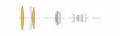
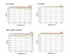

器材库 > 35mm画幅AF定焦镜头 / DG 500/4 OS HSM / Sports > DG 500/4 OS HSM | Sports

详细规格
镜头类型
超远摄镜头
发布日期
2016-09-20
焦距
500mm
最大光圈
f/4
最小光圈
f/32
视角（对角）
5°
镜头结构
16片/11组
光圈叶片
9片
最近对焦距离
350cm
最大放大倍率
1:6.5
驱动马达
HSM（超声波马达）
滤镜口径
46mm
镜头卡口
Canon EF, Nikon F, Sigma SA
防抖
是
颜色
黑色
尺寸
144.8×380.3mm
重量
3310g
附件
镜头包，遮光罩（LH1388-01），WR保护镜（后部插片式），镜头脚架（原装）
备注
高规格防尘防滴性能；尼康卡口版本的镜头采用了电磁光圈
lbxyx352017-06-29 22:454.67 分
操作性 4.50耐用性 4.50性价比 4.50解像力 5.00色彩还原 5.00机械结构 4.50
产品图 / 样片
DG 500/4 OS HSM | Sports
DG 500/4 OS HSM | Sports

DG 500/4 OS HSM | Sports
评测 / 相关文章
- 详细内容 （存档）
- 勇敢的“挑战者”适马500/4 S测评 （存档）
- ［资讯］长焦大炮之争 适马500/4对比尼康500/4 （存档）
- ［行情］适马500/4大炮最新报价 （存档）
- ［试用］适马500mm F4 S镜头实拍样张 （存档）
- ［资讯］大炮抢先看 适马500/4高清图赏 （存档）
- ［资讯］适马85mm与12-24mm与500mm镜头图赏 （存档）